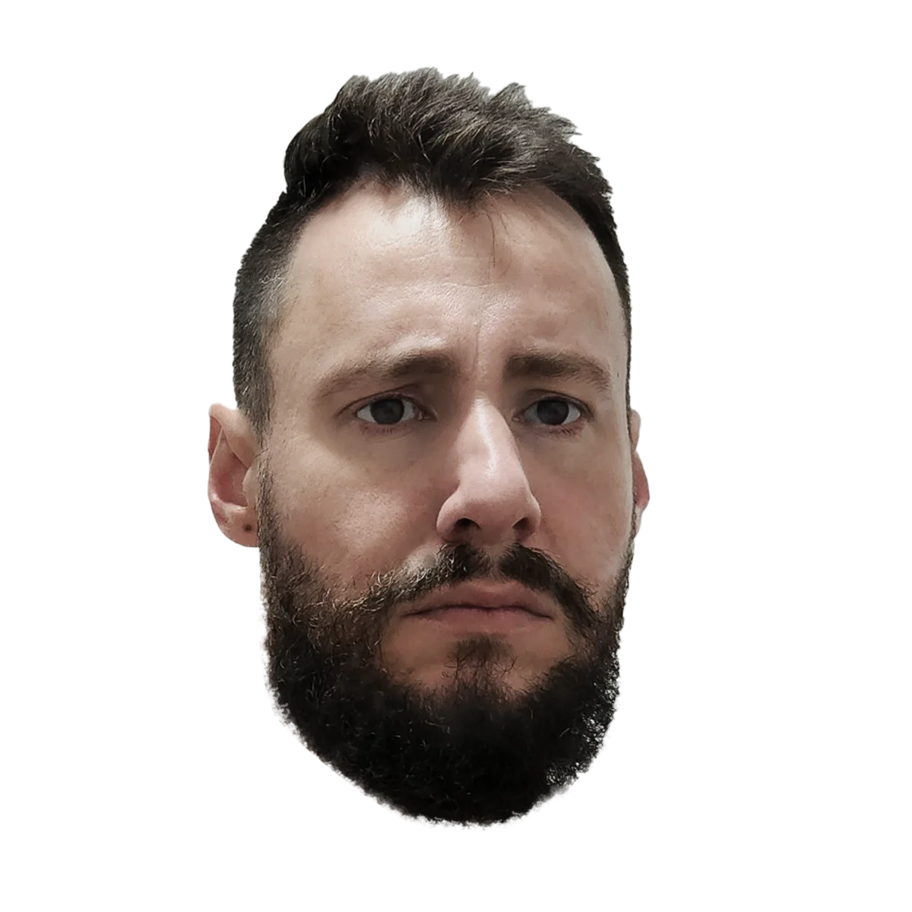
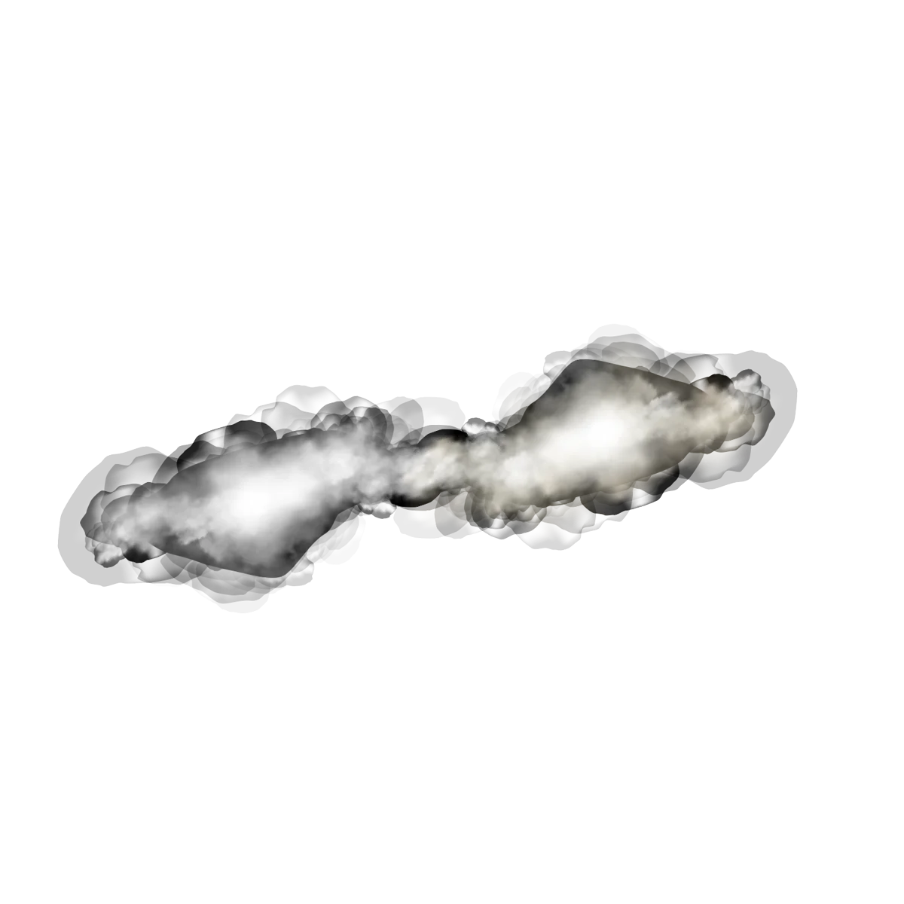

Muito prazer,Rafael Dias.
Designer gráfico e criador audiovisual com mais de 15 anos de experiência.
Minha jornada começou com o olhar fotográfico, ainda na adolescência, e chegou ao desenvolvimento de projetos audiovisuais para grandes marcas. Nos últimos 7 anos, atuei no mercado financeiro criando soluções visuais em design, fotografia, vídeo, podcasts e live streaming, com foco em engajamento e conversão.
Sou movido pela inovação, fujo do lugar comum e trabalho para que a criatividade entregue resultados mensuráveis.
Da marca ao vídeo, com o mesmo cuidado.
Branding
Identidade visual, manual de marca e direção de arte para manter a unidade visual da marca.
Social media
Posts, carrosséis e templates para Instagram, além de thumbnails para YouTube.
Web e e-mail marketing
Landing pages e e-mails marketing com foco em captação de leads e conversão.
Fotografia
Produto, gastronomia, retrato, eventos e bancos de imagem, com edição e tratamento.
Vídeo e motion
Vinhetas em motion graphics, vídeos institucionais, same day edit e edição.
Live streaming e podcast
Produção e execução de transmissões ao vivo e podcasts.
Designer · Freelancer
Projetos de branding, social media, landing pages, fotografia e vídeo para clientes diversos.
Master Corretora e BlueBank · Analista de Design Gráfico Sênior
Duas empresas do mesmo grupo. Na Master Corretora, peças para o lançamento da corretora, redes sociais, vídeo institucional e vinhetas. Em 2025, transferido para o BlueBank, onde desenvolvi a identidade visual e o manual de marca. Designer responsável da equipe, orientando o time para manter o padrão e a unidade visual das marcas.
CM Capital Markets · Analista de Design Gráfico Pleno II
Peças publicitárias, sociais e de endomarketing, materiais de produto on e off-line, bancos de fotografia, landing pages e e-mails marketing para captação de leads, gravação e edição de vídeos, live streaming e vinhetas em motion graphics.
Produtor de conteúdo audiovisual · Autônomo
Criação e pós-produção de materiais gráficos, fotográficos e de vídeo para empresas de diversos segmentos. Coberturas de grandes eventos para Apex Brasil, Chandon, Swarovski e Áudio Club, trabalhos para USP e FGV, fotografia de produto e capas de livros, conteúdo jornalístico e e-learning.
- Bacharelado em Design GráficoUniversidade Anhembi Morumbi · conclusão em 2026
- Product ManagerEscola PM3
- Ilustração e Animação 2DEscola Saga
- Produção e execução de live streamingSeegma